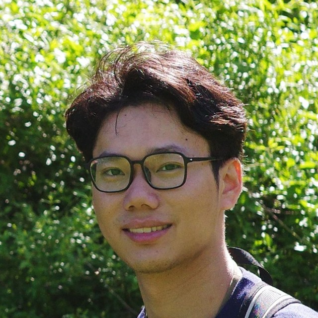

Yiyun Luo
Ph.D. in Computer Science
Aix-Marseille University · Computer Science and Systems Laboratory (LIS)
Marseille, France
About
I work on intelligent perception from aerial and remote-sensing imagery. My research connects visual foundation models, diffusion-based representation learning, photogrammetry, and multi-view 3D reconstruction.
My doctoral research focuses on 3D reconstruction from multi-view aerial imagery, supervised by Prof. Sebastien Mavromatis.
Research Interests
- Vision foundation models
- Photogrammetry and 3D reconstruction
- Remote sensing imagery analysis
- Geospatial information and earth observation
Publications
-
Label-Efficient Fine-Tuning for Remote Sensing Imagery Segmentation with Diffusion Models
Remote Sensing, 17(15):2579, 2025
-
DDPM-based Feature Learner Enables Label-Efficient Transfer in Land Cover Classification
Proceedings of SPIE 13616, 2025
-
Pixel Representation Augmented through Cross-Attention for High-Resolution Remote Sensing Imagery Segmentation
Remote Sensing, 14(21):5415, 2022
Ongoing Research
-
OPMVS: Open-World Multi-View Stereo with Aerial Imagery
-
RSSR-Bench: Benchmarking Vision-Language Models on Spatial Reasoning over Remote Sensing Imagery
Education
- Aix-Marseille University, FrancePh.D. in Computer Science
- Guangzhou University, ChinaM.S. in Geomatics
- Xiangtan University, ChinaB.S. in Geomatics
Talks
-
DDPM-based Feature Learner Enables Label-Efficient Transfer in Land Cover Classification
Oral presentation, SPIE Optics + Photonics, San Diego, USA, August 2025
Contact
For academic enquiries: yiyun.luo@etu.univ-amu.fr